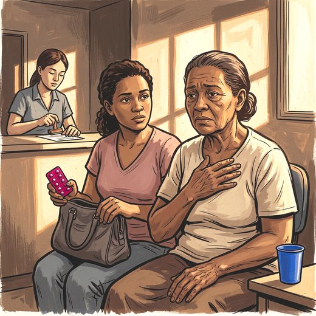

Consulta rápida à beira do leito
Condutas, doses e interações.
Referências da aula · 6
- Cruz PP, Sousa RAL, Felício LFF, Monteiro-Junior RS, Cassilhas RC. Association between lower limb strength, anxiety, and depression symptoms in older adults. Rev Assoc Med Bras. 2026;72(7):e20260070. doi:10.1590/1806-9282.20260070.DOI
- Byrne GJA. What happens to anxiety disorders in later life? Rev Bras Psiquiatr. 2002;24(Supl 1):74-80.
- Wolitzky-Taylor KB, Castriotta N, Lenze EJ, Stanley MA, Craske MG. Anxiety disorders in older adults: a comprehensive review. Depress Anxiety. 2010;27(2):190-211. PMID 20099273. doi:10.1002/da.20653.PubMedDOI
- American Psychiatric Association. Diagnostic and Statistical Manual of Mental Disorders, 5th ed., Text Revision (DSM-5-TR). Washington: APA; 2022.
- Gulpers B, Ramakers I, Hamel R, Köhler S, Oude Voshaar R, Verhey F. Anxiety as a predictor for cognitive decline and dementia: a systematic review and meta-analysis. Am J Geriatr Psychiatry. 2016;24(10):823-42. PMID 27591161. doi:10.1016/j.jagp.2016.05.015.PubMedDOI
- 2023 American Geriatrics Society Beers Criteria Update Expert Panel. American Geriatrics Society 2023 updated AGS Beers Criteria for potentially inappropriate medication use in older adults. J Am Geriatr Soc. 2023;71(7):2052-81. PMID 37139824. doi:10.1111/jgs.18372.PubMedDOI